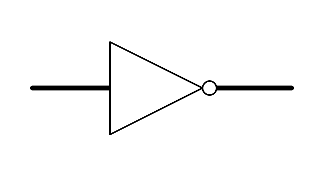
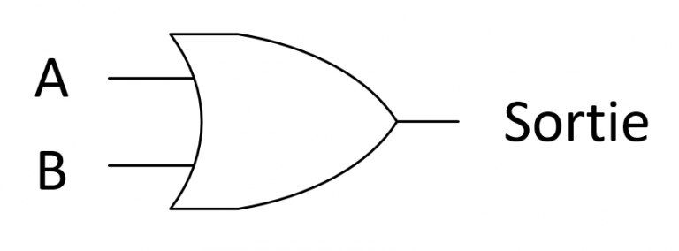
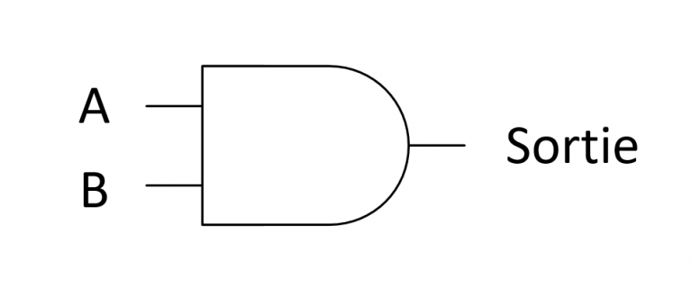
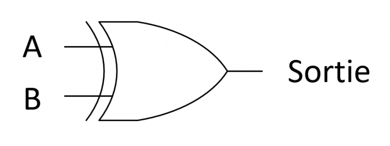

La logique booléenne
Un ordinateur est doté de circuits électroniques qui lui permettent de stocker des informations (la mémoire) et de faire des calculs (l’unité arithmétique et logique du processeur). Ces circuits électroniques fonctionnent avec deux niveaux de signal électronique : le courant passe («1» ou «vrai») ou ne passe pas («0» ou «faux»).
On parle de logique binaire ou booléenne, et l’information véhiculée par le signal électrique est appelée bit, abréviation de l’anglais binary digit.
1. Les opérateurs de la logique booléenne
La logique binaire, ou logique booléenne, a trois principaux opérateurs pour manipuler les valeurs logiques Vrai et Faux :
-
la négation (NOT) : soit A une valeur logique,
NOT(A)(ounon A) est vrai si A est faux et vice versa -
le et logique (AND) : soient A et B deux valeurs logiques,
AND(A,B)(ouA et B) est vrai si et seulement si A est vrai et B est vrai -
le ou logique (OR) : soient A et B deux valeurs logiques,
OR(A,B)(ouA ou B) est vrai si et seulement si A est vrai ou B est vrai, y compris si les deux sont vrais.
La table suivante est la table de vérité de ces trois opérateurs. Elle représente le résultat de chaque opérateur pour toutes les valeurs de vérité des opérandes A et B :
| A | B | Non A | Non B | A ou B | A et B |
|---|---|---|---|---|---|
| Vrai | Vrai | Faux | Faux | Vrai | Vrai |
| Vrai | Faux | Faux | Vrai | Vrai | Faux |
| Faux | Vrai | Vrai | Faux | Vrai | Faux |
| Faux | Faux | Vrai | Vrai | Faux | Faux |
Les opérations en logique booléennes ont les propriétés importantes suivantes :
- Commutativité : A et B == B et A ; A ou B == B ou A.
- Associativité : A et (B et C) == (A et B) et C ; A ou (B ou C) == (A ou B) ou C.
- Distributivité : A et (B ou C) == (A et B) ou (A et C) ; A ou (B et C) == (A ou B) et (A ou C).
Par contre, A et (B ou C) n’est pas équivalent à (A et B) ou C. Elles vérifient également les identités remarquables, appelées Lois de De Morgan :
- non (A et B) == non A ou non B
- non (A ou B) == non A et non B
Enfin, toutes les fonctions booléennes peuvent s’exprimer avec une combinaison des opérateurs ou, et et non.
2. Les circuits logiques binaires
Les circuits intégrés des ordinateurs sont constitués de portes logiques (appelés transistors) qui permettent de combiner des signaux binaires. Si l’on convient que la présence d’un signal électrique représente la valeur logique Vrai et son absence la valeur logique Faux, les portes logiques permettent de combiner ces signaux pour effectuer les opérations de la logique booléenne.
Les portes logiques sont représentées conventionnellement par les schémas ci-dessous dans les circuits logiques.
| Non A | A ou B | A et B | A xor B |
|---|---|---|---|
|  |  |  |  |
La combinaison des portes logiques permet de construire les composants de base d’un ordinateur comme, par exemple, l’addition de nombres binaires dans le processeur. Dans ce cas, les valeurs booléennes Vrai et Faux sont interprétées comme 1 et 0.
Dans le schéma ci-dessous, la sortie S est la somme des deux bits A et B, et R la retenue. Ainsi, si A vaut 1 et B vaut 1, la somme est 2, soit 10 en binaire, donc S vaut 0 et R vaut 1.
3. Les expressions logiques : évaluation «court-circuit»
Dans les langages de programmation comme Python, les valeurs de type booléen (True et False) implémentent la logique booléenne. Cependant, les opérateurs tirent parti des propriétés suivantes qui permettent d’accélérer le calcul d’expressions booléennes dans certains cas :
Faux et Bvaut Faux quelle que soit la valeur de BVrai ou Bvaut vrai quelle que soit la valeur de B
Ainsi, si l’on a une expression A et B et que l’on a calculé que A est faux, le résultat est forcément faux et il n’y a donc pas besoin de calculer B. De même, si l’on a une expression A ou B et que l’on a calculé que A est vrai, le résultat est forcément vrai et on n’a pas besoin de calculer B. On parle d’évaluation court-circuit.
Ainsi, bien que ces opérateurs soient en principe commutatifs, l’ordre des termes dans les expressions booléennes de Python a de l’importance.
Considérons l’expression Python y/x > 0 and x != 0 et que x est nul, le calcul de y/x > 0 provoque une erreur de division par zéro.
Par contre, si l’on écrit x != 0 and y/x > 0. Si x est nul, x != 0 est faux et donc on n’a pas besoin de calculer y/x > 0, ce qui évite de provoquer l'erreur de division par zéro. L’ordre d’évaluation est donc important.
En résumé, dans une expression conjonctive A and B and C and …, la première condition fausse arrête le calcul de l’expression, qui vaut False.
Dans une expression disjonctive A or B or C or …, la première condition vraie arrête le calcul de l’expression, qui vaut True.